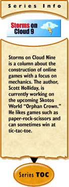

Storms on Cloud 9 #34:
The Wheel
by Scott Holliday
2004-07-16
I wear more than one hat. Although much of my time is spent in world and game design, probably even more is spent writing code. An early consideration during development (especially indie development) is how to find and organize a team. Although there aren't any obvious answers, presenting prospective team-mates with a proof-of-concept and an experienced group helps. This was especially easy in my case since I could fill two of the critical tasks myself. While most of the columns I write concern the design and game-play aspect, I realize I've only been giving cursory notice from my other hat.
So, this column will concentrate on the programming side of things. Since each language and development environment will be different, it wouldn't be very useful to delve into the code itself. However, there are important lessons that can be learned from the overview perspective. Knowing how to code and build clean programs is only the entry-level. The breakpoint is retaining this ability while working on something larger than any one person can grasp. Ever since the first MUD was introduced, a hundred one-person projects spring up each year with the purpose to "build a better MUD from the ground up." How many of these one-person projects have ever reached their goal?
Whenever I approach a coding project, my first urge is of course to destroy it and start over from scratch. How else could I ever understand each of the little parts? However, as an experienced programmer I know better. In fact, I know that even if I DID start over, a year from now I'd be having the same urges regardless. If you get lost making tools, you'll never have a finished game. Of course, there are times when you need a tool that doesn't exist yet. For instance, some of my most recent work has been building a tool that would assemble dynamically-generated but sensible maps - and then translate them into the machine code my engine is using. Yes, there are already tools that do approximately the same thing, but it was a simple project and it performs exactly to my specs. However, I wouldn't even think of rebuilding the engine itself.
Part of being a skilled programmer is the understanding of when (and how) to use what has already been built. There is no reason to reinvent the wheel. There are coders who built their own operating system from the ground up. It presents an interesting endeavor - and may provide examples for improvement to other operating systems. Likewise, the big MMOGs often build upon their own proprietary graphics, physics, or webcode engines. The point here does not concern the merit of these projects. Rather, my purpose is to analyze where the game-coder fits into all of this. If the goal is to build a new OS, you could sink your life into that and never see the end. If the assignment is to build a better graphics, physics, or webcode engine, then you have your focus. However, the game-coder uses these pieces (and the tools that meld them all together) with the sole purpose that the game works and works well. This isn't meant as a compliment. Without the tool-builders, we'd still be in the stone age of computer gaming. If anything, the game-coders are the accessory layer.
So, as a game-coder, where do you start? Assuming you already know how to code, the next important step is picking which code you are going to build on top of. If you want to build a text-based online game, which code do you start with? There are hundreds of MUD variants - although this is only the tip of the iceberg. If you instead want graphics and/or physics, which engine will you build from? Yes, in both cases, you could start from scratch. But is your goal to build a better text/graphics/physics engine, or is it to build a working game? Even better than previously written (and tested) code is a community devoted to its continued improvement, use and maintenance. This is one of the big advantages of becoming tied to a development community such as Skotos.
Unfortunately, not all code-base is created equal. One of the earliest steps is to create a proof-of-concept. Will the code that you are building on perform all of the functions that you want? Before the project gets too far, you desperately need to know that you aren't driving down a dead end. This is the stage where you become familiar with the capabilities and behavior of the mass of code your game will be riding. This is also a critical stage to the continued development of the game. When you go looking for additional team members, nothing is as telling as a working proof-of-concept. Does your game already work without bells and whistles? In this respect, joining a working team is much like choosing a codebase.
[ <— #33: Endurance | #35: Order and Planning —> ]